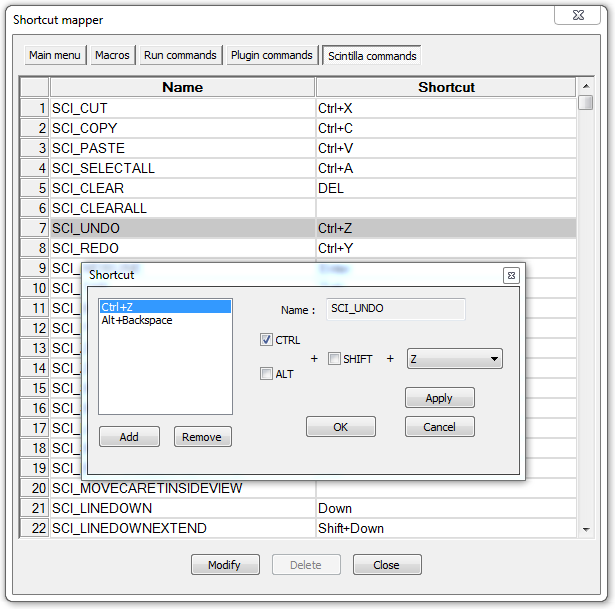

Texto original
Sugiere una traducción mejor
| Previous: Configurador de resaltado de sintaxis | ajustes de los parámetros |
El mapeador de atajos controla los atajos de teclado asignados a los comandos de menú y la herramienta Scintilla. Presionando dicho atajo ejecutará el comando. Los accesos directos del menú son únicos, lo que significa que un elemento del menú solo puede tener un acceso directo (puede ingresar duplicados, pero solo uno está activo, así que tenga cuidado con los conflictos). Los accesos directos de Scintilla tienen un mapeo de uno a muchos, lo que significa que varios comandos abren un comando Scintilla.
Los accesos directos se muestran en una lista de dos columnas. La columna de la izquierda muestra el nombre del comando, la columna de la derecha el acceso directo asociado, donde corresponda. Se muestran los accesos directos, puede modificar uno haciendo doble clic en él, o haciendo clic con el botón derecho y seleccionando . Aparece un cuadro de diálogo con el nombre (modificable para macros y comandos de usuario) y el atajo asignado. Use las casillas de verificación para verificar qué teclas de modificación usar (tenga en cuenta que Scintilla no es compatible con la clave de Windowsporque no tiene sentido en una máquina Unix / Mac) y listas desplegables para elegir la clave principal. Al elegir "Ninguno" en la lista, se desactiva la tecla de método abreviado (aparece una advertencia). Presionando aplica los cambios, cancelaciones, como lo hace el cierre prematuro del diálogo.

El cuadro de diálogo para los accesos directos de Scintilla es un poco diferente porque puede agregar varios accesos directos. Además de las comprobaciones normales, encontrará una lista opcionalmente vacía con todos los accesos directos asignados. El botón agregará el acceso directo actual si es [Ninguno] y aún no está en la lista. El botón borra el acceso directo seleccionado de la lista (puede eliminarlos también, excepto el último).El botón reemplazará el acceso directo actualmente seleccionado por la configuración actual. Para eliminar un atajo, si hay más de uno presente, use el botón . Para eliminar un acceso directo si está solo, debe ponerlo "Ninguno" y
El botón guarda adiciones o cambios; al menos se necesita uno. Si el nuevo acceso directo no es válido, este botón no estará activo más de lo .